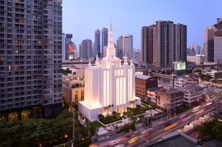
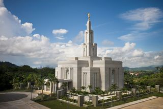
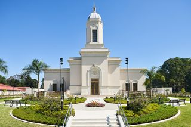
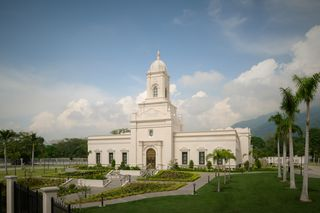
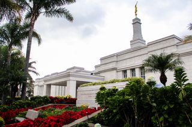
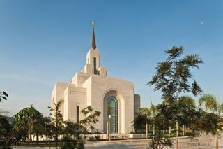
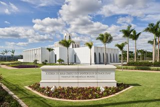
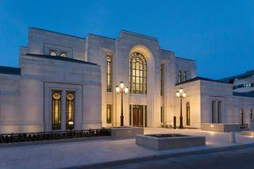

Bangkok, Thailand Temple

Panama City, Panama Temple

Coban, Guatemala TempleQuetzaltenango, Guatemala Temple

San Pedro Sula, Honduras Temple

San Jose, Costa Rica Temple

San Salvador, El Salvador Temple

Brasília, Brazil Temple

Paris, France Temple